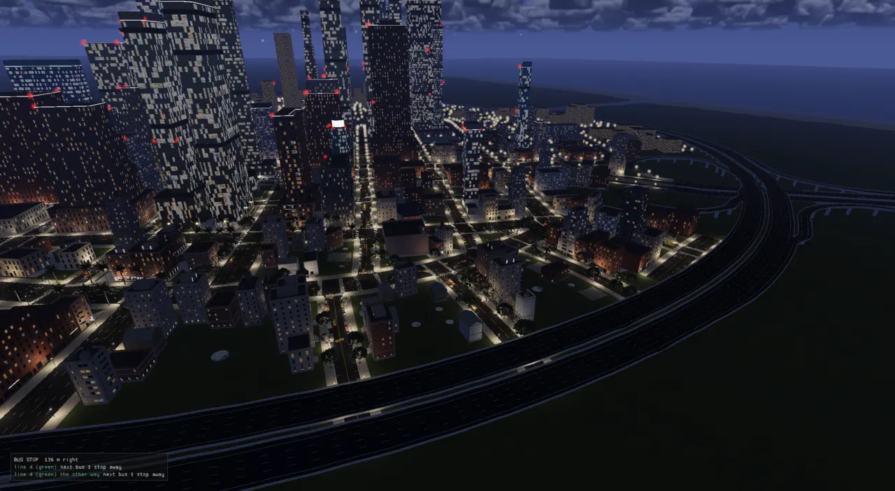
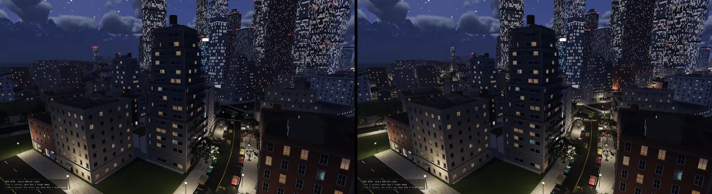
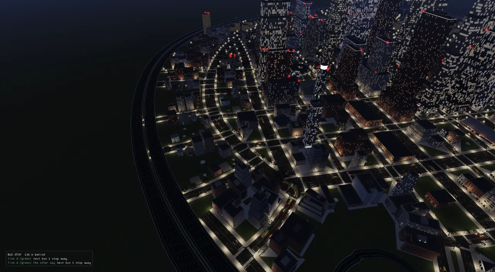
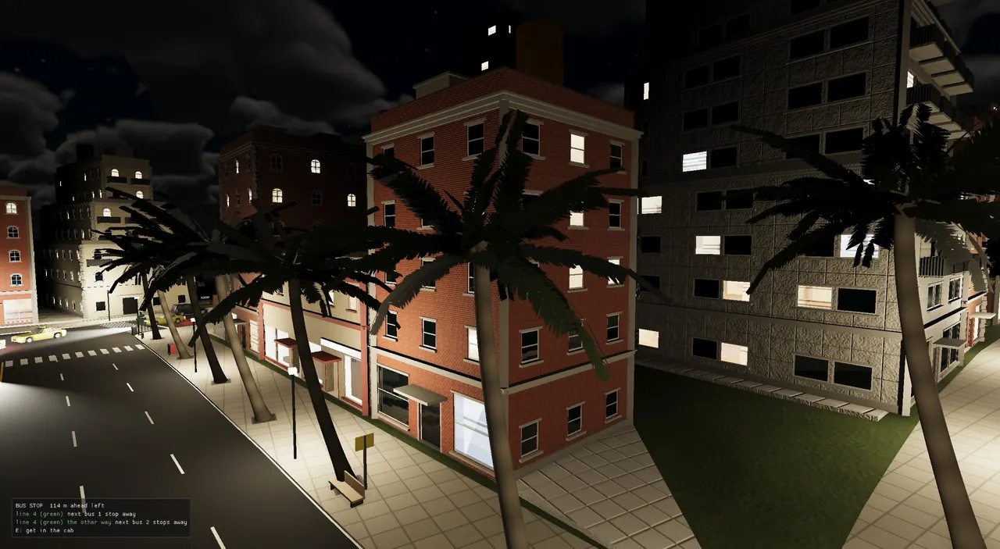

Lights
Every lamp, headlight, ceiling fitting and bus saloon in the world is one kind from a Lua table. The systems that own them only publish where their lights are; one light system picks which are lit this frame, and one Vulkan path lights each pixel from a short list of the lights near it. Since November 2026 that list can hold thousands of lights, the rooms keep their light inside their walls, and the lights and glows can be given in real candela and cd/m², on the same scale as the physical sky.

The problem
The renderer is forward: each surface is shaded once, as it is drawn, by mesh.frag, which used to loop a
fixed array of 32 lights in the frame's uniform buffer for every pixel (A frame on the GPU
shows that loop). Thirty-two lights had to cover the sun, the nearest 20 street lamps, a few cars' headlight cones,
the flashlight, the rooms round the player and the roof beacons. When the list was full, headlights dropped first.
A town of a thousand lamps could only ever light the twenty nearest.
Who chose the 32 was its own problem. On 2026-11-07 real lights were picked in seven places, each with its own nearest-N cap and its own fade (ADR-0362): RenderSystem merged street and station lamps (20 within 160 m), VehicleSystem kept the 3 nearest lit cars, BuildingInteriorSystem one light per storey, ElevatorSystem appended its cab lights to the rooms' list (so the result depended on the systems' order), BeaconLightSystem 6 within 60 m with a linear fade, plus the flashlight and the level's own authored lights. Every colour, brightness, reach and cone was a C++ constant. Glenn asked the question that started the rework: "Why are two separate places picking lights? Should this be a unified system?"
And the numbers were not real. Lamps, lit windows and signs had been tuned by eye against a night exposure lifted six times, about 500 times brighter than real light (ADR-0366). Once the physical sky and an adapting eye arrived, that showed: a city bright as day at dusk, lit rooms brighter at 22:00 than at noon, every window seen from inside a white sheet. The rest of this page is how the light system was rebuilt over two days to fix all three.
The shape of it
The whole light path at commit e55dfaaa. The top half is ADR-0362 (one picker) and ADR-0363 (budgets by renderer); the bottom half is ADR-0361 (clustered lights) and ADR-0364 (binned on the GPU).
Lights are data: lights.lua
ADR-0362 moved every light's numbers out of C++ into assets/scripts/lights.lua. It has two tables.
A kind is what a light is: point or spot, its colour, its intensity, its range (where the falloff
window reaches zero), a spot's cone, an offset from the emitter's point (a bulb hangs under its lamp head), whether
it rides the dusk ramp (dark by day, warming up through twilight), and which pool pays for it. A pool
is a budget: at most count lights, within within metres of the camera, fading at the edge
of the set or not, and picking emitters in groups or one by one.
kinds = {
-- the street's lamps (StreetFurniture lamp heads): warm sodium-white pools that meet at 26 m spacing
street_lamp = { candela = 1600, type = "point", color = { 1.0, 0.82, 0.55 }, intensity = 48, range = 34,
offset = { 0, -0.35, 0 }, dusk = true, pool = "street" },
-- a station's canopy fittings (RailStop lamps, 12 m apart): cool white, a shorter pool under a roof
station_lamp = { candela = 600, type = "point", color = { 0.92, 0.96, 1.0 }, intensity = 26, range = 16,
dusk = true, pool = "street" },
-- a car's headlight: a cone pitched down onto the road ahead (the emitter aims it)
headlight = { candela = 15000, type = "spot", color = { 1.0, 0.95, 0.82 }, intensity = 22, range = 45,
cone = { 0.32, 0.55 }, pool = "headlights" },
pools = {
-- every street lamp in sight lights its pool; a 32-light renderer keeps the nearest 20
street = { count = 20, within = 160, fade = true, many = { count = 2500, within = 800 } },
-- the player's car always, then the nearest lit cars, two beams each
headlights = { count = 3, within = 0, fade = false, groups = true,
many = { count = 300, within = 400, fade = true } },
tails = { count = 0, within = 0, fade = true, groups = true, many = { count = 300, within = 200 } },
beacons = { count = 6, within = 60, fade = true, many = { count = 64, within = 250 } },
-- the fittings of the streamed interiors round the player
rooms = { count = 8, within = 15, fade = true, many = { count = 600, within = 45 } },
-- the buses' saloons: the nearest bus's three (the one you ride), then every lit saloon near
cabins = { count = 3, within = 25, fade = true, groups = true, many = { count = 60, within = 150 } },
},
Each kind carries two brightnesses. intensity is the old one, illuminance at 1 m in the engine's
ADR-0017 units, tuned against the old night exposure. candela is the real luminous intensity, used when
the physical sky is on (ADR-0369, below). The file is read once at start by ensureLightsLoaded into a
LightBook (engine/lights/light_kinds.h). There is deliberately no C++ copy of the catalogue:
without the file one plain white point kind stands and the loader warns. Producers look a kind up once per call
site (static const int k = lightKindId("headlight");), and an unknown name is skipped with a single
warning, not a crash. A new kind of light is a row in the table, which is the project's
kinds are data rule applied to lights.
| Kind | Type | candela | range | Pool | Who publishes it |
|---|---|---|---|---|---|
| street_lamp | point | 1,600 | 34 m | street | LightSystem, from StreetFurniture lamp heads |
| station_lamp | point | 600 | 16 m | street | LightSystem, from RailStop lamps |
| headlight | spot | 15,000 | 45 m | headlights | VehicleSystem (physics vehicles, yours marked), CityRenderSystem (traffic) |
| flashlight | spot | 2,000 | 60 m | none: always lit | FlashlightSystem |
| room_panel / room_round / room_pendant | point, room-bounded | 1,300 / 700 / 250 | 6 / 6 / 4 m | rooms | BuildingInteriorSystem, one per ceiling fitting |
| room_fill | point | 250 | 20 m | none | BuildingInteriorSystem, one per storey |
| cab | point | 300 | 6 m | none | ElevatorSystem |
| tail_light / brake_light | point | 15 / 80 | 4 / 6 m | tails | CityRenderSystem |
| bus_cabin | point | 800 | 7 m | cabins | CityRenderSystem, three per bus |
| beacon | point | 100 | 10 m | beacons | BeaconLightSystem |
The kinds at e55dfaaa, from lights.lua. A kind with no pool is lit whenever it is
published. The same file also holds the glow classes, the reflection probes' spacing and the ray-traced reflections'
rules (see Reflections).
Emitters publish, they never pick
A system that gives off light now writes candidates onto its own channel of the LightBoard
and stops there. A candidate is a kind, a position, an aim, and a few modifiers. It says nothing about whether it
will be lit.
struct LightCandidate {
int kind = -1; // lightBook().kinds; -1: skipped
Vec3 position;
Vec3 direction{0, 0, 1}; // a spot's aim
float scale = 1.0f; // times the kind's intensity (a flash, a level's beacon reach)
float range = 0.0f; // the falloff window, metres; 0: the kind's
uint32_t group = 0; // candidates sharing a group are picked whole (a car's two lamps); 0: alone
bool mine = false; // the player's own: picked first, never faded
// a room's light: lit only inside this box (PointLight::roomBox, ADR-0365)
bool roomBox = false;
float boxCx = 0, boxCz = 0, boxUx = 1, boxUz = 0, boxHalfU = 0, boxHalfV = 0, boxFloorY = 0;
};
// The producers, one channel each (Traffic: city cars' head and tail lamps, CityRenderSystem) (static emitters -- street lamps, station lamps -- are read by LightSystem itself).
enum class LightChannel : int { Vehicles, Tool, Rooms, Cabs, Beacons, Traffic, Count };
Each producer replaces its channel at its own cadence: VehicleSystem every fixed step, the flashlight every
frame, the rooms and the elevator cabs every step. Giving the cabs their own channel removed the old order
dependency, where ElevatorSystem appended to the rooms' list and so had to run after BuildingInteriorSystem. The
group field lets a pool take emitters whole: a car's lamps share one group, and a bus's three saloon
lights share another. mine marks the player's own lights, which are picked first and never faded.
Street and station lamps do not move, so nobody publishes them. LightSystem reads them itself from
StreetFurniture and RailTracks and files them in a 64 m grid, rebuilt only when
their count changes (a level loads, a tile streams in). Each frame only the cells within the street pool's reach are
read, and only after dark. Before ADR-0363, every lamp on the map was tested every frame.
{
static const int fittingKind[3] = {lightKindId("room_panel"), lightKindId("room_round"), lightKindId("room_pendant")};
for (const std::pair<const std::size_t, Resident>& kv : resident_)
for (const RoomLight& rl : kv.second.lights) {
LightCandidate c;
c.kind = fittingKind[std::clamp(rl.kind, 0, 2)];
c.position = rl.at;
c.roomBox = true;
c.boxCx = static_cast<float>(rl.centre.x);
c.boxCz = static_cast<float>(rl.centre.y);
c.boxUx = static_cast<float>(rl.u.x);
c.boxUz = static_cast<float>(rl.u.y);
c.boxHalfU = static_cast<float>(rl.halfU);
c.boxHalfV = static_cast<float>(rl.halfV);
c.boxFloorY = static_cast<float>(rl.floorY);
rooms.push_back(c);
}
One picker
pickLights (engine/lights/light_picker.cpp) is a pure function: candidates and a camera
position in, lights out. The tests in tests/test_lights.cpp exercise it directly. For each pool it
collects the units in reach (a single candidate, or a whole group, which counts at the distance of its
nearest member). It ranks them with yours first and then by distance, and keeps count.
const std::size_t keep = std::min(units.size(), static_cast<std::size_t>(std::max(0, pool.count)));
auto before = [](const Unit& a, const Unit& b) { return a.mine != b.mine ? a.mine : a.d < b.d; };
std::partial_sort(units.begin(), units.begin() + static_cast<std::ptrdiff_t>(keep), units.end(), before);
float edge = pool.within;
if (units.size() > keep && keep > 0) { // the count binds: the farthest picked is the edge that moves
float farthest = 0.0f;
for (std::size_t u = 0; u < keep; ++u) farthest = std::max(farthest, units[u].d);
edge = edge > 0.0f ? std::min(edge, farthest) : farthest;
}
The fade is what stops lights popping. A picked light fades out across the last quarter of the pool's edge with a smoothstep. The edge is the pool's reach, or, when the count is the binding limit, the distance of the farthest light picked. That second edge moves with the camera. As you drive, the 21st-nearest lamp is fading in while the 20th is fading out, rather than one switching on as the other switches off. This was the street lamps' rule since the WS3 street-lights work. ADR-0362 made it every pool's. The lit strength is then the kind's intensity × the candidate's scale × the fade × the dusk ramp (for kinds that ride it), and a light that comes out at zero is left out.
Then comes the renderer's capacity. If more lights survive than the renderer can take, only the most important stay: yours, then the ones giving the most light where the camera is.
if (static_cast<int>(order.size()) > std::max(0, cap)) {
std::vector<float> score(cands.size(), 0.0f);
for (std::size_t i : order) {
const LightKind& k = book.kinds[static_cast<std::size_t>(cands[i].kind)];
score[i] = cands[i].mine ? std::numeric_limits<float>::max()
: lightImportance(lit[i], cands[i].range > 0.0f ? cands[i].range : k.range, dist[i]);
}
const std::size_t keepN = static_cast<std::size_t>(std::max(0, cap));
std::nth_element(order.begin(), order.begin() + static_cast<std::ptrdiff_t>(keepN), order.end(),
[&](std::size_t a, std::size_t b) { return score[a] > score[b]; });
order.resize(keepN);
std::sort(order.begin(), order.end()); // back in the candidates' order
}
lightImportance is the light's illuminance at the camera, intensity / d² with
d at least 1 m, and zero past its range. It is a crude measure (a lamp behind you scores as high as one
in front), but it replaced something worse. Before ADR-0363 the forward renderer simply cut its list at 32 in
arrival order, so headlights, which arrived last, were the first to go. The test
light_picker_trims_to_the_renderers_capacity_by_importance pins the rule: ten lamps and a far-off torch,
capacity 4, and the torch is kept along with the three nearest lamps.
LightSystem::render wraps the picker. It runs in the render phase just before RenderSystem, takes its
budgets from what the renderer says it can light, and swaps in the real candela when the physical sky is on:
// UNDER THE PHYSICAL SKY (ADR-0369) each kind lights at its real candela, in engine units static LightBook physicalBook; static bool physicalMade = false; if (!physicalMade) { physicalBook = loaded; for (LightKind& k : physicalBook.kinds) if (k.candela > 0.0f) k.intensity = static_cast<float>(k.candela / kLuxPerUnit); physicalMade = true; } const LightBook& book = ctx.view.lighting.physicalSky.enabled ? physicalBook : loaded; static const int streetPool = book.pool("street"); static const int beaconPool = book.pool("beacons"); static const int streetLamp = lightKindId("street_lamp"); // THE BUDGETS, by what the renderer can light: the level's own lights first, the rest is ours const int capacity = ctx.renderer.lightCapacity(); const bool many = capacity > 64; const int cap = std::max(0, capacity - static_cast<int>(ctx.view.lighting.pointLights.size() + ctx.view.lighting.spotLights.size())); std::vector<LightPool> pools = book.pools; for (LightPool& p : pools) if (many && p.hasMany) { p.count = p.manyCount; p.within = p.manyWithin; p.fade = p.manyFade; }
The order of the output matters, because the forward renderer and some shaders read a prefix of it. LightSystem
puts the rooms and cabs first, then the static lamps, then beacons, traffic, your car's beams and the flashlight.
RenderSystem then puts the level's own authored lights in front of all of them. A level's light block still sets
the forward street and beacon pools (CitySimConfig's lampLightCount,
lampLightRadius, lampLightRange, lightCount, lightRadius), and
overlay lamplights off empties the street pool while the lamp heads stay lit.
The same picture, by design. ADR-0362 was a refactor and was held to that: river_town at 22:00 with the forward renderer, shot at the same poses before and after, differed by a mean of 0.28/255 on the street (0.97% of pixels over 8) and 0.62/255 at the towers (1.47%). The differing pixels were things that move between runs (palm fronds, beacon blinks). Two changes were intended. The beacons' pools now fade with the shared smoothstep instead of linearly over their last 15 m, and a light that comes out dark is dropped instead of taking a slot, which took the street view from 23 lights to 22.
Why not deferred: the measurement
Glenn's request on 2026-11-07 was "look into the deferred rendering so we could have many, many light sources".
Deferred shading renders every surface's material into a set of screen-sized buffers (a G-buffer) first, then
lights each pixel once in a separate pass, so hidden surfaces are never lit. Its usual selling point is that a
forward renderer lights fragments that end up overdrawn. ADR-0361 measured before choosing, using two knobs that
pad or cut the forward list (RT_LIGHT_FILL, RT_LIGHT_CAP) and RT_GPU_TIMES for
the scene pass (river_town at 22:00, 2560×1405, RTX 3080).
| View | Scene-pass cost per light |
|---|---|
| towers | 0.102 ms |
| a park with trees and grass (the most overdraw) | 0.103 ms |
| a shop street | 0.090 ms |
ADR-0361. The park costs no more per light than the street.
That flat line is the finding. The depth test already discards hidden fragments, so each pixel is lit about once
in the forward pass too. Deferred's win was mostly already there. What a light costs is how many lights each pixel
loops through, and at ~0.1 ms each a thousand lights would be ~100 ms. That cost is what clustering cuts, and
it cuts it without the rest of deferred's bill. ADR-0361 lists that bill: a fatter G-buffer (albedo, metallic,
emission, a shading model on top of today's normal and roughness), mesh.frag (1,722 lines, every surface)
split into material and lighting halves, grass and leaf transmission and the impostors' self-shadow turned into special
shading models, and three backends restructured. The ADR keeps the door open: the froxel lists would serve a
deferred lighting pass unchanged, and deferred is worth revisiting for decals, for AO on the ambient term only
(today AO darkens direct light and emission too), or if a TAA velocity target makes a G-buffer nearly free.
Clustered lights
A froxel (frustum voxel) is one cell of the view frustum cut into a grid: screen tiles across, depth slices along the view. Each light is listed in every froxel its sphere of influence touches. A pixel finds its froxel and shades with only that list. A street of a thousand lamps then costs each pixel the handful near it.
A side view: the 9 tile rows fan out from the eye, the depth slices cut across them. Exponential slices keep froxels roughly cube-shaped at every distance, small near the eye where lights are dense on screen.
struct ClusterGrid {
int tilesX = 16, tilesY = 9, slices = 24;
float zNear = 0.5f, zFar = 2000.0f; // view depth the slices span (m); nearer is slice 0, farther the last
int cells() const { return tilesX * tilesY * slices; }
// The slice a view depth falls in (exponential: each slice the same ratio deeper), clamped to the grid.
int sliceOf(float depth) const;
float sliceNear(int s) const;
};
The CPU binner, buildClusters, moves each light into view space and makes a cheap first cut: the
sphere's depth span gives the slices it can reach, and the tangents of its span at the near and far ends give the
tiles. Inside that block it tests the sphere against each froxel's box. Every touch becomes a (froxel, light) pair,
and a counting sort turns the pairs into one flat index list with an offset and count per froxel, with no
per-froxel vectors to grow.
for (int s = s0; s <= s1; ++s) {
const float zn = grid.sliceNear(s), zf = grid.sliceNear(s + 1);
for (int ty = ty0; ty <= ty1; ++ty) {
const float a = edgeY(ty), b = edgeY(ty + 1);
const float yLo = std::min(a * zn, a * zf), yHi = std::max(b * zn, b * zf);
for (int tx = tx0; tx <= tx1; ++tx) {
const float c = edgeX(tx), e = edgeX(tx + 1);
const float xLo = std::min(c * zn, c * zf), xHi = std::max(e * zn, e * zf);
// the sphere against the froxel's box (view space)
const float qx = std::clamp(x, xLo, xHi) - x, qy = std::clamp(y, yLo, yHi) - y, qz = std::clamp(d, zn, zf) - d;
if (qx * qx + qy * qy + qz * qz > r2) continue;
touches.push_back({static_cast<uint32_t>((s * grid.tilesY + ty) * grid.tilesX + tx), static_cast<uint32_t>(li)});
}
On the Vulkan side, setLights still fills the uniform buffer's 32 slots exactly as before (the sun
first), because a few loops still read them. It also writes every point and spot light, up to 4,096, into a storage
buffer at set 0, binding 8. The froxels' offset|count words go to binding 9 and the index lists to binding 10.
// CLUSTERED (RT_CLUSTERED=1): every point and spot, past the 32, into the light buffer; the froxels pick for each // pixel (endFrame bins them). The UBO's 32 stay as they were (the sun first) for the loops that read them still // (grass and leaf transmission, the water's glint, the viewer's room). impl->clustered = clusteredLights(); impl->clusterLights.clear(); if (impl->clustered) { for (const PointLight& p : lighting.pointLights) { if (impl->clusterLights.size() >= Impl::kClusterMaxLights) break; GpuLight l{}; setColor(l.positionIntensity, p.position, p.intensity); setColor(l.colorOuter, p.color, 0.0f); l.typeRange[1] = p.range; roomBox(l, p); impl->clusterLights.push_back(l); }
In mesh.frag the change is small. The pixel finds its froxel from its screen position and its
view depth, then loops that froxel's list instead of the 32. The directional light (the sun, or the moon at
night) still comes from the uniform buffer. shadeLight, one light's GGX maths, is shared by both paths,
so clustered and forward give the same picture.
// This pixel's froxel (clustered lights, ADR-0361): where its list of lights starts in clusterIndices, and how many void clusterCell(vec3 worldPos, out uint off, out uint n) { float depth = -(g.view * vec4(worldPos, 1.0)).z; int tx = clamp(int(gl_FragCoord.x / g.clusterDepth.z * float(g.clusterGrid.x)), 0, g.clusterGrid.x - 1); int ty = clamp(g.clusterGrid.y - 1 - int(gl_FragCoord.y / g.clusterDepth.w * float(g.clusterGrid.y)), 0, g.clusterGrid.y - 1); int sl = depth <= g.clusterDepth.x ? 0 : clamp(int(log(depth / g.clusterDepth.x) * g.clusterDepth.y * float(g.clusterGrid.z)), 0, g.clusterGrid.z - 1); uint oc = clusterCells[(sl * g.clusterGrid.y + ty) * g.clusterGrid.x + tx]; off = oc & 0xFFFFFFu; n = oc >> 24; } // (`indoor`: a room's surface, which takes its lights' bounce too -- roomBounce) vec3 evaluateLighting(vec3 worldPos, vec3 N, vec3 V, vec3 albedo, float metallic, float roughness, vec3 f0, vec3 sunShadow, bool indoor) { vec3 directLight = vec3(0.0); vec3 bounce = vec3(0.0); float a = max(roughness * roughness, 0.002); float a2 = a * a; float NdotV = max(dot(N, V), 1e-4); int count = min(g.counts.x, 32); if (g.clusterGrid.w != 0) { // CLUSTERED: the sun (and the moon) from the 32, every other light from this pixel's froxel for (int i = 0; i < count; ++i) if (int(g.lights[i].typeRange.x) == 1) directLight += shadeLight(g.lights[i], worldPos, N, V, albedo, metallic, f0, a2, NdotV, sunShadow); uint off, n; clusterCell(worldPos, off, n); for (uint k = 0u; k < n; ++k) { Light light = clusterLights[clusterIndices[off + k]]; directLight += shadeLight(light, worldPos, N, V, albedo, metallic, f0, a2, NdotV, sunShadow); if (indoor) bounce += roomBounce(light, worldPos); } return directLight + bounce * albedo * (1.0 - metallic) / PI; } for (int i = 0; i < count; ++i) { directLight += shadeLight(g.lights[i], worldPos, N, V, albedo, metallic, f0, a2, NdotV, sunShadow); if (indoor) bounce += roomBounce(g.lights[i], worldPos); } return directLight + bounce * albedo * (1.0 - metallic) / PI; }
The tile row is flipped (clusterGrid.y - 1 - …) because the binner's tiles count up from the bottom
of the view, where Vulkan's gl_FragCoord.y counts down. The slice comes from the same logarithm the CPU
uses, with 1 / log(far / near) precomputed into clusterDepth.y.
What it bought
| View (scene pass) | forward, 23 lights | clustered, the same 23 | clustered, every lamp in 800 m (~1,000) |
|---|---|---|---|
| street | 5.02 ms | 4.62 | 5.40 |
| towers | 8.46 | 7.35 | 9.73 |
ADR-0361, river_town at 22:00, 2560×1405, RTX 3080. With the same lights the picture matched (mean difference 0.04/255 on the street) and was cheaper.

The prototype was off by default. ADR-0363 (the same day) made it Vulkan's default and gave every pool a second,
larger budget for a renderer that can light thousands. Renderer::lightCapacity() reports which kind of
renderer it is: 31 on a forward one (Metal, WebGPU, or Vulkan with RT_CLUSTERED=0, one slot being the
sun's), 4,096 on clustered Vulkan. LightSystem treats any capacity over 64 as "many".
// CLUSTERED LIGHTS (ADR-0361), on by default since ADR-0362's phase 2; RT_CLUSTERED=0 is the forward A/B (the fixed 32)
static bool clusteredLights() {
static const bool on = [] { const char* e = std::getenv("RT_CLUSTERED"); return !(e && std::string(e) == "0"); }();
return on;
}
int VulkanRenderer::lightCapacity() const { return clusteredLights() ? static_cast<int>(Impl::kClusterMaxLights) : 31; }
The same ADR made city traffic's lamps real lights, from each car's own lamp markers in vehicles.lua:
two headlight beams, a red tail glow after dark, a brighter brake glow while braking. The RT_LAMP_LIGHTS
/ RT_LAMP_RADIUS trial switches were deleted, because the pools' many budgets replace them.
| View (scene pass) | forward (25 picked) | many | lights lit (published) |
|---|---|---|---|
| river_town street | 6.00 ms | 5.77 ms | 1,326 (2,104): 75 cars' beams |
| river_town towers | 8.86 ms | 10.82 ms | 1,108 (1,971) |
| island_8_nature, a town | 5.38 ms | 5.03 ms | 751 (885) |
ADR-0363. The towers view looks across most of the town and pays about 2 ms for a lit town and its traffic; the other two are cheaper than forward, because a pixel's list is shorter than the forward 25.


Binned on the GPU (ADR-0364)
CPU binning cost 0.3–0.5 ms for real streets, but its worst case is lights crowded round the camera: each one
touches most of the near froxels, and 1,000 lights within 60 m took 6.8–12.6 ms of the main thread. Interiors (dozens
of fittings a floor) and a junction full of headlights are exactly that case. cluster_bin.comp moves the
work to a compute shader: one workgroup of 64 threads per froxel (3,456 workgroups). The threads test every light
with the CPU's first cut and the same sphere-against-box test, gather the touching ones in shared memory (up to
256), and keep the nearest 64 to the froxel's middle when there are more.
barrier();
const uint n = min(candCount, GATHER);
const uint keep = min(n, SLOTS);
// over the cap: the nearest the middle stay (ties by light order, so the pick is the same every frame)
for (uint k = t; k < n; k += 64u) {
uint nearer = 0u;
if (n > SLOTS)
for (uint j = 0u; j < n; ++j)
if (candD2[j] < candD2[k] || (candD2[j] == candD2[k] && candIdx[j] < candIdx[k])) ++nearer;
candKeep[k] = nearer < SLOTS ? 1u : 0u;
}
barrier();
// the kept, written in light order (a deterministic list, like the CPU's)
const uint base = cell * SLOTS;
for (uint k = t; k < n; k += 64u) {
if (candKeep[k] == 0u) continue;
uint before = 0u;
for (uint j = 0u; j < n; ++j)
if (candKeep[j] != 0u && candIdx[j] < candIdx[k]) ++before;
indices[base + before] = candIdx[k];
}
if (t == 0u) cells[cell] = (base & 0xFFFFFFu) | (keep << 24);
Giving each froxel a fixed run of 64 slots (base = cell * 64) avoids a prefix sum. It costs memory
(3,456 × 64 indices), but the output is in the very format mesh.frag already read, so the scene pass did
not change. The dispatch is recorded before any pass of the frame, with barriers from the host's write of
the lights and to the fragment shader's reads.
| View (river_town, 22:00) | CPU binning | GPU binning | RT_CLUSTER_CHECK |
|---|---|---|---|
| towers, 1,113 lights | 0.39–0.50 ms of CPU | ~0.1 ms of GPU | 20 of 20 equal |
| street, 1,326 lights | 0.42–0.47 ms | ~0.05 ms | 22 of 22 equal |
1,000 lights within 60 m (RT_LIGHT_FILL) | 6.8–12.6 ms | ~0.2 ms | 16 equal but one tie at the cap |
ADR-0364. The GPU time is the growth of the shadows bucket of RT_GPU_TIMES,
which the dispatch falls in.
A checker that caught an over-count. RT_CLUSTER_CHECK=1 reads the
GPU's lists back every 120 frames (one frame slot later, after its fence) and compares them froxel by froxel with
buildClusters run on the same lights and camera. The first version of the shader tested only the box,
and the check found up to 1,555 extra lights in about 245 froxels, though never a missing one. The froxels' boxes
overhang the frustum's wedge, so a light could touch a box without being visible through it. Adding the CPU's first
cut (the sphere's depth span and view-ratio span) made the two equal. RT_GPU_CLUSTERS=0 still bins on
the CPU.
Fixed since this page's commit: a crowded froxel keeps the same lights. The threads
gathered the touching lights in whatever order they won the shared counter, so past 256 a different set could be
dropped each frame and a lamp flickered. Since 2026-11-09 (58d12b54, ADR-0391) the gather runs 64
lights a pass in light order, each thread's slot from a prefix count over the pass, so the kept set is the same
every frame. RT_CLUSTER_CHECK on a night street: 0 of 3,456 froxels differ, 1,952 lights.
Room lights, kept to their rooms (ADR-0365)
"Buildings just seem bright all around" (Glenn, 2026-11-07). A streamed interior had been lit by one warm point
per storey at the building's centre, reaching twice the building's width, and local lights cast no shadows, so it
lit through every wall. ADR-0365 lights rooms from their fittings. Every ceiling fitting the furniture planner hangs
(an office's recessed panel, a home's round flush fitting, a bar's pendant) records a RoomLight in
BuildingMesh::roomLights: where the light is, which fitting, and the box of the room it hangs in.
Walls still cast no shadows, and a shadow map per room would be far too expensive. Instead each light carries its room's box and lights nothing outside it. A room's own walls are lit on their inner faces, and the room next door is not.
The box is a rotated rectangle in plan (centre, axis, half extents) plus a floor height. A spot light
already uses directionInner and colorOuter.w for its aim and cone, so a room light reuses
those slots, and the type tells the shader which reading applies.
// Point lights (type 0). // (a room's light, type 3, carries its box: directionInner = centre x, z, axis x, z; colorOuter.w its floor; // typeRange.zw the half extents -- mesh.frag lights only inside it, ADR-0365) auto roomBox = [](GpuLight& l, const PointLight& p) { if (!p.roomBox) return; l.directionInner[0] = p.boxCx; l.directionInner[1] = p.boxCz; l.directionInner[2] = p.boxUx; l.directionInner[3] = p.boxUz; l.colorOuter[3] = p.boxFloorY; l.typeRange[0] = 3.0f; l.typeRange[2] = p.boxHalfU; l.typeRange[3] = p.boxHalfV; };
// A room's light (ADR-0365) reaches only inside its room's box: 1 inside, 0 past its walls -- its own walls' inner // faces lit, the next room's not float roomLightInside(Light light, vec3 worldPos) { vec2 d = worldPos.xz - light.directionInner.xy; vec2 u = light.directionInner.zw; float out_ = max(max(abs(dot(d, u)) - light.typeRange.z, abs(dot(d, vec2(-u.y, u.x))) - light.typeRange.w), light.colorOuter.w - 0.05 - worldPos.y); return 1.0 - smoothstep(0.02, 0.12, out_); } // THE ROOM'S BOUNCE (Glenn, 2026-11-08: "lights in the interior at night are too dim"): a room's light reaches the // ceiling and the walls beside it mostly off the floor and the other walls -- in a pale room about as much again as // it gives directly. Each room light's irradiance at a distance softened by the room's height (the bounce comes from // everywhere round it), facing no way, at half (a room's average reflectance), kept to its room. Irradiance: the // caller takes albedo / pi of it. vec3 roomBounce(Light light, vec3 worldPos) { if (int(light.typeRange.x) != 3) return vec3(0.0); float dist = length(light.positionIntensity.xyz - worldPos); float ratio2 = (dist * dist) / max(light.typeRange.y * light.typeRange.y, 1e-4); float window = clamp(1.0 - ratio2 * ratio2, 0.0, 1.0); const float kSoften2 = 2.5 * 2.5, kReflectance = 0.5; return light.colorOuter.rgb * (light.positionIntensity.w * kReflectance * window * window / (dist * dist + kSoften2)) * roomLightInside(light, worldPos); }
The fittings pick from the rooms pool (forward: 8 within 15 m; many: 600 within 45 m). The storey
light did not go away. It stayed as a dim room_fill (intensity 5 instead of 22), standing in for the
light rooms bounce about and lighting the corridors, which hang no fittings.
Found on the way. Inside at 22:00 the rooms came out brighter than at noon. The night exposure lift (×6) applied indoors as well, so a lit room saturated to flat white and no fitting's pool could show. ADR-0365 recorded that as the exposure work's problem, not the lights', and it is what ADR-0366 and the adapting eye of ADR-0368 went on to fix (see The sky).
Units, and the scene pre-exposed (ADR-0366)
A physical sky spans noon to moonlight, about 16 stops. The HDR targets are 16-bit floats, and the exposure used to be applied in the composite, after the scene had been stored, so the scene's raw values had to fit fp16 at every hour. ADR-0366 fixed the units first, then where exposure happens.
One engine light unit is 20,000 lux (kLuxPerUnit in engine/sky/sky_atmosphere.h),
or 20,000 cd/m² when it measures luminance. The day cycle's noon sun, 5 units, is then 100,000 lux, which is
clear-day sunlight at the ground. A level's typical exposure of 0.7 works out at EV100 14.5 (exposure =
kLuxPerUnit / (1.2 × 2^EV100)), close to the photographer's "sunny 16" rule of EV 15. So the daytime look was
already nearly physical. Night was not: lamps, windows and signs had been tuned against the ×6 night exposure,
about 500 times brighter than real.
Pre-exposure means multiplying by the camera's exposure while drawing, not afterwards. mesh.frag,
sky.frag and the clouds scale their radiance by it, so the stored HDR values sit near 1 whatever the
scene's brightness, and the composite exposes by 1. Bloom's threshold and knee were rescaled to match, and so were
the underwater composite's sky terms.
// PRE-EXPOSURE (ADR-0366): the scene is exposed as it is drawn -- mesh.frag, sky.frag and the clouds scale their // radiance by it, rides cameraPosition.w -- so the HDR targets hold values near 1 whatever the units (physical // light: a noon street ~10^4, a moonlit one ~10^-2, far past what fp16 keeps). The composite then exposes by 1. // RT_PREEXPOSE=0: the old order (exposure in the composite), the A/B. cpuGlobals.cameraPosition[3] = preExposure();
The proof was an A/B with RT_PREEXPOSE=0 (the old order) on river_town's towers and street at 22:00
and at noon: means equal (43.3/43.3, 82.3/82.3, 45.5/45.7, 37.1/37.0), with palm fronds in the wind again the only
difference. Later passes follow the same rule: the ray-traced reflections' output (rt_reflect.comp) is
multiplied by g.cameraPosition.w as it is stored.
Physical lights and glows (ADR-0369)
With the units fixed, the lights could be given real values. Under the physical sky (RT_SKY=physical,
still opt-in at this commit) LightSystem builds a second LightBook once, with each kind's intensity
replaced by candela / kLuxPerUnit. A point light's intensity is its illuminance at 1 m, and a source of
I candela gives I lux at 1 m, so the conversion is exact. The LightSystem excerpt above
shows it. A street lamp is 1,600 cd, a headlight 15,000, an office ceiling panel 1,300, a tail lamp 15.
Glows are the other half of night: surfaces that emit light without lighting anything (a lit window, a lamp
head, a sign, a beacon bulb). Their emission had the same ×500 problem. ADR-0369 gave them two routes into units. A
global emission_scale of 0.004 brings any old emission into engine units (a lit window at the old 1.3
comes to about 100 cd/m²). Then, the same day, glow classes: each class of glowing surface the level loader
tags declares its real luminance in lights.lua, and is lit at that in its own colour.
| Glow class | cd/m² | Glow class | cd/m² | |
|---|---|---|---|---|
| window_pane | 25 | street_lamp_head | 8,000 | |
| lit_band | 300 | station_lamp_head | 5,000 | |
| far_city | 12 | sign | 400 | |
| beacon_bulb / glow / haze | 3,000 / 2,000 / 800 | the moon's disc | 2,500 |
ADR-0369 and lights.lua. The city's glow on the night sky is 2 cd/m² low toward downtown
(city_glow_nits); the sky itself is its own page.
The plumbing is easy to get wrong, which matters for the bug in the next section. The loader tags a glowing entity
with a NightGlow holding its class's nits. DayNightSystem writes the material's emission as
the glow's colour scaled so its peak is nits × perNit, where perNit = 1 / (kLuxPerUnit ×
emission_scale). Every shader that draws the surface then multiplies by emission_scale
(skyPhysical3.z), which lands it in engine units. The material stores nits / 80. It is not
stored in engine units directly because the shader-side scale is shared with all the untagged old emission.
One glow's path from the table to the screen. The ×0.004 has to be applied by every shader that reads the emission, and one of them did not.
// a glow's full emission: its real luminance in its colour under the physical sky, else its old value
Vec3 glowEmission(const NightGlow& glow, double perNit) {
if (perNit <= 0.0 || glow.nits <= 0.0f) return glow.fullEmission;
const Vec3& c = glow.fullEmission;
const double peak = std::max(c.x, std::max(c.y, c.z));
return peak > 0.0 ? c * (glow.nits * perNit / peak) : Vec3(0, 0, 0);
}
// (under the physical sky every glow's emission comes into engine units: ADR-0369)
vec3 color = direct + ambient + emission * (skyIsPhysical() ? g.skyPhysical3.z : 1.0);
ADR-0369's "still owed" list says what was wrong next: at night the lit windows clipped to white, because the camera adapted to the lamp-lit street, about 10 times darker than a window. That is where the next section starts.
Indoors, night windows, and buses
On 2026-11-08 Glenn walked the build at night and filed a list: interior walls "occlude the outside but catch the
color of the outside", office floors that speckle, tower windows "bright white and too harsh", the view out of a bus
"almost all white", a bus saloon dark at night. Four ADRs that day answered it. Their lighting parts are below.
Most of the shader work is in the physical-sky branch of mesh.frag, so it applies under
RT_SKY=physical.
Indoors (ADR-0377)
RenderMaterial::FLAG_INDOOR (bit 28) is set at load on drywall, every interior floor finish and all
furniture parts. No re-bake is needed. An indoor surface never reads the street's reflection probes or the open
sky's light. It takes a dim, neutral share of the day's light, the sky's up-facing irradiance made grey, for both its
fill and what it reflects. ADR-0377 set the share at 12%. ADR-0378 raised it to 30% the next day, after a lobby's
back wall seen through its glazing went black at 12%. The probe relight (probe_relight.comp) lights an
indoor texel with the same share, so an indoor probe agrees with the room it holds (see Reflections).
The glittering floors are partly a lighting story too. Specular anti-aliasing and Toksvig filtering helped, but the real cause was that indoor finishes borrowed the outdoor material bakes. Their relief and pores broke every ceiling lamp's highlight into specks. An indoor finish now takes the bake's relief at a fifth and its roughness variation at a quarter, and the lamps show as soft pools.
Night windows with a light of their own (ADR-0378)
Before changing anything, ADR-0378 measured: only 0.7% of night pixels were clipped. The harshness was not overexposure alone. Every lit room was the same near-white at the same level. A tower's windows are drawn by an interior-mapped pane (a fake room behind the glass, read from an atlas), and each room now gets its own light from a hash of its cell:
// EACH ROOM ITS OWN LIGHT (ADR-0378; Glenn: the towers' lit windows "bright white and too harsh"): a tower at // night is not every room at full -- about a fifth show only a desk lamp's warm pool, half are part-lit, a // third full. And the room's tint counts twice, so a warm room and a fluorescent one keep their colour through // the tone curve instead of all reading as the same white. float rnd3 = fract(sin(dot(cellv, vec3(71.113, 23.917, 5.331))) * 15731.743); float level = rnd3 < 0.18 ? 0.15 : rnd3 < 0.70 ? mix(0.45, 0.8, (rnd3 - 0.18) / 0.52) : 1.0; roomLight *= level * (rnd3 < 0.18 ? vec3(1.0, 0.62, 0.32) : paneTint);
About a fifth of rooms (18% of the hash) show only a desk lamp's warm pool at 15%, half are part-lit at 45–80%, and the rest are full. The room's tint is applied twice, so a warm room and a fluorescent one keep their colour through the tone curve. The other half of the fix is in the eye. Auto exposure gained highlight protection: it never exposes so far that the brightest 3% of the frame passes 1.5 before the tone curve. By day that is the sky. At night it is the windows, which a median-keyed eye had pushed about 7 stops past white. Exposure has its own page.
Two vehicle fixes rode along. The drivable car's panes were albedo {1,1,1} at 30% opacity, a lit white
veil over everything seen through them, and now take the kit's glass tint as traffic glass already did. And buses
got saloon lights: the bus_cabin kind in a cabins pool (3, or 60 with clustering), three
down each bus under the roof, one group per bus.
// THE SALOON'S LIGHTS (ADR-0378; Glenn: "The bus interior is dark at night so the bus will need // interior lights"): three ceiling lights down the saloon, under the roof the front sign stands at -- // lights.lua bus_cabin, on the dusk ramp, one group a bus so the picker takes them whole static const int cabinKind = engine::lightKindId("bus_cabin"); if (cabinKind >= 0) { const Real ceiling = busSignLocal_.m[1][3] - 0.25; // (the sign's middle is near the roof) const Real half = busSignLocal_.m[2][3] * 0.6; // (...and its z the saloon's front) for (int li = -1; li <= 1; ++li) { engine::LightCandidate c; c.kind = cabinKind; c.position = body.transformPoint(Vec3(0, ceiling, half * li)); c.direction = body.transformPoint(Vec3(0, ceiling - 1, half * li)) - c.position; c.group = 0x40000000u + static_cast<uint32_t>(ai); trafficLights_.push_back(c); }
Night windows from inside, and a room's bounce (ADR-0382)
The next complaint was the reverse view: at night every window seen from inside a building or a bus was
white, "a shaded/AO only version of what's outside with no color". The diagnosis began with RT_GLASS=none,
which hides the panes. With them hidden, the night street showed through, dark, with its lit windows, so the white was
the pane's own reflection.
A window of the viewer's own (the building they stand in or the bus they ride, given to the renderer as
SceneLighting::viewerBox) reflects the room behind the viewer, not the sky. Its daytime term was
g.ambient.rgb * 0.35, a unitless ambient strength. Under pre-exposure (ADR-0366) the night exposure is
applied while drawing, about 170 times at night, and that constant came out white. Now the reflected room is lit in
real terms: by day the indoor share of the sky's light (0.30) on a 0.7 wall, at night the room's lamps, and the
ceiling panels at the glows' physical scale.
float glowScale = skyIsPhysical() ? g.skyPhysical3.z : 1.0;
vec3 roomDay = skyIsPhysical()
? vec3(dot(skyIrradianceSH(vec3(0.0, 1.0, 0.0)), vec3(0.2126, 0.7152, 0.0722)) * 0.30 * 0.7)
: g.ambient.rgb * 0.35;
vec3 reflected = own ? fs * (roomDay + roomRadiance(inWorldPos) + ceilingPanels(inWorldPos, Rv) * glowScale)
: prefiltered * fs * g.ambient.rgb * ambientShadow;
The rooms themselves were too dim ("an office would be bright"). The eye was keyed correctly: the office's median
was 20 nits, at mid grey. The room lacked light, because each fitting lit only what faced it, so the ceiling between
the panels and the far walls went dark. Real rooms are lit as much by bounce as by the fittings directly.
roomBounce (in the excerpt above) adds a cheap stand-in. Each room light adds to an indoor surface its
irradiance at a distance softened by 2.5 m (so the bounce comes "from everywhere" and does not peak under the lamp),
facing no particular way, at half strength (a room's average reflectance), and kept to the room's box. The box test
became one shared function, roomLightInside, used by both the light and its bounce. The office's median
went from 20 to 37 nits, with the ceiling and walls lit.

Two smaller changes in the same ADR. Highlight protection is off inside a viewer box, because there the brightest
3% is the room's own fittings, which may clip, and a room should expose for its walls as a camera in one does. And
bus_cabin went from 350 to 800 cd ("a bit dim").
The window's room, from the clusters (ADR-0383). The next walk found that a bus window
still did not reflect its saloon. roomRadiance summed the uniform buffer's 32, which under clustered
lighting holds only the sun, so no lamp ever showed in a window from inside. It now walks the pixel's froxel
(clusterCell, shared with evaluateLighting) and counts only lights inside the viewer's box
(inViewerBox, shared with the own-window test): the saloon's lamps, not the street's.
Glows in the rays' units (ADR-0385)
"The nighttime reflections of other buildings still seems really bright" (Glenn, 2026-11-08). The ray-traced
reflections shade what a ray hits in a compute shader, rt_reflect.comp, with its own copy of the
surface sum. It added a hit's emission without emission_scale, so every lit window seen in a
reflection was about 250 times the window itself (1 / 0.004). The scene pass and the probe capture both apply the
scale; the rays now do too.
// (in the physical sky's units, as the scene pass draws a glow: without the glows' scale, 0.004, every lit // window in a reflection was ~250x the window itself -- Glenn, 2026-11-08: "the nighttime reflections of other // buildings still seems really bright") vec3 emission = I.emissionMetal.rgb * ((I.flags & 32u) != 0u ? tint : vec3(1.0)) * (skyIsPhysical() ? g.skyPhysical3.z : 1.0);
This is the cost of a scale that every reader has to remember. Each consumer of emission has to multiply by it, and a new consumer that does not will be wrong by a factor of 250 without any error. The reflections themselves are their own page.
Who reads the lights
"One picker chooses" holds on the CPU. On the GPU the picked lights arrive in two forms, and not every shader reads the same one.
| Reader | What it reads | Notes |
|---|---|---|
mesh.frag evaluateLighting | the sun from the 32; every other light from the pixel's froxel | forward (RT_CLUSTERED=0): all 32 |
mesh.frag roomRadiance | the pixel's froxel, lights in the viewer's box only | point and room lights (types 0 and 3) |
mesh.frag leaf/grass transmission, water glint | the 32, type 1 only | the sun |
probe_relight.comp | the 32 | diffuse only (SHADE_DIFFUSE_ONLY): a
highlight belongs to the viewer's eye, not the probe's |
rt_reflect.comp | the 32 | a ray's hit lit by shadeLight, the sun's
shadow by another ray |
cluster_bin.comp | the cluster light buffer | positions and ranges only |
At e55dfaaa. shadeLight, roomLightInside and roomBounce live in
lighting_common.glsl, shared by mesh.frag, probe_relight.comp and
rt_reflect.comp, so a light means the same thing to all three.
vec3 direct = vec3(0.0);
for (int i = 0; i < min(g.counts.x, 32); ++i)
direct += shadeLight(g.lights[i], H, Nh, Vh, albedo, metallic, f0, a * a, NdotV, sunShadow);
The consequence is worth knowing. Under clustered lighting the 32 are the sun plus the first 31 lights in
LightSystem's order, which is the level's own, then rooms and cabs, then street lamps. Spots (headlights, the
flashlight) come after every point light in setLights. So a reflection probe or a ray-traced reflection
sees at most 31 of the picked lights, mostly rooms and the nearest street lamps, and in a busy scene no headlights at
all. The screen sees all of them. Nothing in the ADRs addresses this yet (see the end of the page).
Fixed since this page's commit. On 2026-11-09 (5335f32f) the light loop
moved into lighting_common.glsl as the one evaluateLighting the scene pass, the probes'
relight and the rays' hits all call, and the froxel lookup became clusterCellAt in
globals.glsl: it finds a world point's froxel by projecting it with the frame's camera, not by the
pixel being drawn. A probe texel or a ray's hit that the camera sees now takes its froxel's lights, headlights and
the flashlight among them; one it does not see (behind the camera) still takes the 32.
How it got here
2026-11-07, the morning: measure, then cluster. ADR-0017 had rejected deferred "for
now", to be revisited with many-light cities. When the request came, ADR-0361 measured the forward pass first, found
each light costs ~0.1 ms everywhere, and built clustered forward behind RT_CLUSTERED=1
(723b3d77). A trial that lit city traffic's lamps prompted Glenn's "are we patching things because it's a
quick win instead of doing the right thing which is harder but better?", and that produced the light-system plan
(~/.claude/plans/light-system.md) and its phase 1, ADR-0362 (1ecef860).
2026-11-07, the afternoon: phases 2, 3 and 5b. Clustered became the default, with
budgets by renderer, the static lamps in a grid and traffic's lamps lit (ADR-0363). The bin moved to the GPU
(ADR-0364), both in c1529809. Rooms were lit from their fittings and bounded by their boxes (ADR-0365), and the
units and pre-exposure (ADR-0366) came in 57ee888b. After the physical sky and auto exposure
(ADR-0367, 0368), the city was "so bright at dusk", and ADR-0369 put the lights at their real candela and the glows
at their real luminance (8a8693a4).
2026-11-08: the night walk. Indoors and the floor glitter (ADR-0377), night windows
with rooms of their own, vehicle glass and bus saloon lights (ADR-0378, 43d4e81f); windows from inside
and a room's bounce (ADR-0382, 0ac70577); the window's room from the clusters (ADR-0383,
38276bb5); emission in the rays' units (ADR-0385, c7393489). Each fix began with a
measurement or an A/B switch that hid one term (RT_GLASS=none, the clipped-pixel count, the office's
median nits). In each case the cause was not the first suspect: the white windows were the pane's own reflection, not
the exposure; the glitter was the borrowed outdoor bakes, not the rays or the environment reflection.
What is still owed
- Spot and point shadows (a shadow atlas of 8, the plan's phase 5): local lights still cast no shadows; only the room box stops a room's light.
- The far tier (phase 4): distant lamps as sprites from
lights.lua, with BeaconLightSystem keeping only the blink. - Clustering on Metal and WebGPU (phase 6); they bin on the CPU when they get it.
- A depth pre-pass to skip empty froxels (ADR-0364).
- The physical sky as the default, after which
intensity,emission_scaleand the old night lift can go (ADR-0369). - The beacons' bulb and haze spheres predate real beacon lights and draw through the glass path as grey-white shells; removing them is a lots tag bump (ADR-0382).
- The bus seen from inside a riding bus, and a home's single-lamp room, were not checked on the bench (ADR-0378, 0382).
Where to look
- assets/scripts/lights.lua — the kinds, pools, glow classes, emission scale (and the probes' and rays' rules)
- src/engine/lights/light_kinds.h —
LightKind,LightPool,LightBook; loaded bysrc/engine/scripting/lights_lua.cpp - src/engine/lights/light_board.h —
LightCandidate, the channels, the frame's picked lights - src/engine/lights/light_picker.h/.cpp —
pickLights,lightImportance,lightEdgeFade - src/engine/systems/light_system.cpp — the static lamps' grid, budgets, the physical book
- src/renderer/light_clusters.h/.cpp —
ClusterGrid,buildClusters(the CPU binner, and the check's reference) - shaders/vulkan/cluster_bin.comp — the GPU binner
- shaders/vulkan/lighting_common.glsl —
shadeLight,roomLightInside,roomBounce, the BRDF and shadows - shaders/vulkan/mesh.frag —
clusterCell,evaluateLighting,roomRadiance,ceilingPanels, the lit rooms, the indoor branch - src/renderer/vulkan/vulkan_renderer.cpp —
setLights,lightCapacity,recordClusterBin,compareClusterCheck - src/engine/systems/day_night_system.cpp — the glows' nits into emission, the dusk ramp, exposure
- Producers:
vehicle_system.cpp,flashlight_system.cpp,building_interior_system.cpp,elevator_system.cpp,beacon_light_system.cpp(all insrc/engine/systems/),src/apps/citysim/city_render.cpp - tests/test_lights.cpp — the picker (nearest, edge fade, groups, dusk, capacity), every kind the producers name, the many budgets; tests/test_light_clusters.cpp — no light missing from a froxel, none behind the camera, a 1,000-lamp street, a crowd at the camera
- docs/decisions.md — ADR-0017, 0361–0366, 0369, 0377, 0378, 0382, 0383, 0385
Switches and probes
| Switch or tool | What it does |
|---|---|
RT_CLUSTERED=0 | the forward renderer's fixed 32 (capacity 31); the A/B for every clustered change |
RT_GPU_CLUSTERS=0 | bin the froxels on the CPU (buildClusters) |
RT_CLUSTER_CHECK=1 | every 120 frames, compare the GPU's lists with the CPU's; logs a [clusters] check line |
RT_LIGHT_FILL=N, RT_LIGHT_CAP=N | pad the list with faint lights round the camera, or cut it to N: for timing the cost per light |
RT_SKY=physical | the physical sky, and with it the candela, glow classes, indoor light and own-window terms |
RT_PREEXPOSE=0 | expose in the composite, as before ADR-0366 |
RT_EXPOSURE=meter | the incident-light meter alone, no adapting eye |
RT_GLASS=none / old | panes drawn as nothing (the reference a pane is measured against) / the old glass |
RT_GPU_TIMES=1 | pass times; the bin dispatch counts in shadows |
overlay lamplights off | empty the street pool (the lamp heads stay lit) |
[lights], [clusters] log lines | every 240 frames: [lights] (at night) lights lit of published and the renderer's capacity; [clusters] lights binned (on the CPU path also list entries, the busiest froxel and the binning time) |
| debug view 10 | the environment reflection alone (used to rule it out of the floor glitter) |